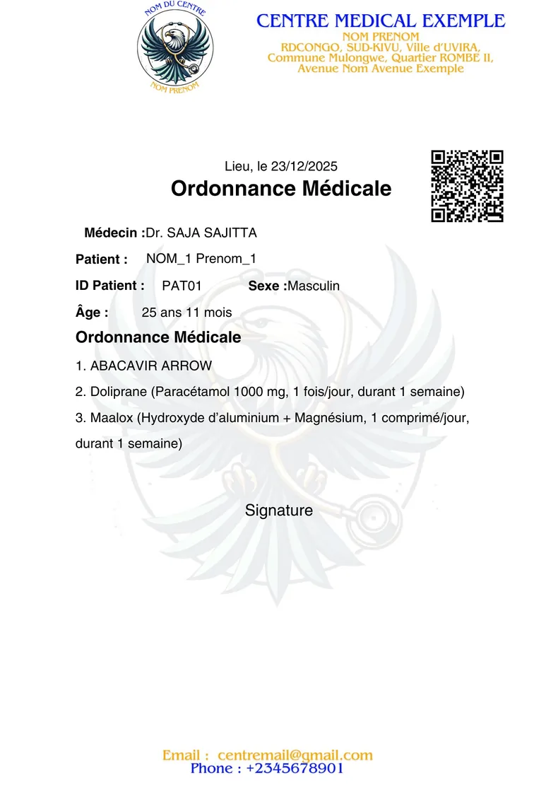

Installez EasyMedicaLink et prenez vos repères
Guide de première utilisation pour les ordinateurs Windows et les appareils connectés à votre réseau local.
1. Choisir et télécharger la bonne version
Sélectionnez l’archive compatible avec votre ordinateur. La version Windows 64 bits est destinée aux systèmes 64 bits ; la version 32 bits vise les systèmes Windows 32 bits compatibles. Pour Android, utilisez l’APK mis à disposition.
Sur Windows, vérifiez le type du système dans les paramètres de votre ordinateur. Une fois le ZIP téléchargé, extrayez-le dans un dossier dédié avant de suivre les instructions comprises dans l’archive. La présence d'un assistant d'installation dépend du paquet distribué.
2. Configurer le PC serveur
L’architecture décrite dans le guide d’origine repose sur un ordinateur jouant le rôle de serveur dans votre structure. Sélectionnez de préférence un PC fiable, qui restera allumé pendant les heures d’utilisation par les autres postes.
- Installez ou décompressez la version Windows compatible.
- Lancez le programme selon les instructions du paquet.
- Autorisez si nécessaire le fonctionnement sur votre réseau local privé, en respectant les règles de sécurité de votre établissement.
- Évitez la mise en veille du PC serveur pendant les sessions de travail en réseau.

3. Première connexion et paramètres
Au premier lancement, suivez le parcours proposé pour créer le compte administrateur si votre version le permet. Choisissez un mot de passe robuste et propre à votre établissement. Dans les paramètres du logiciel, renseignez les informations utiles au cabinet, notamment le nom et le logo si les champs sont disponibles.
4. Rendez-vous et salle d’attente
Dans le module de rendez-vous, choisissez un créneau disponible, recherchez le patient concerné ou procédez à sa création. Suivez les statuts et indications proposés par votre version pour gérer l’arrivée et le passage en consultation.

5. Consultation et documents PDF
Renseignez les observations et les constantes pertinentes, puis utilisez les actions disponibles pour préparer les ordonnances, certificats ou autres documents médicaux. Vérifiez chaque document avant impression ou transmission.

6. Assistant médical Synapse
Lorsqu’il est disponible et correctement configuré, Synapse peut aider à la synthèse de contenus ou à l’organisation d'informations. Relisez systématiquement les réponses et ne prenez pas de décision médicale sur la seule base d’une suggestion générée par IA.
7. Accès depuis les autres appareils
Le guide d’origine prévoit une connexion des appareils au même réseau Wi-Fi ou LAN que le PC serveur. Repérez l’adresse réseau affichée ou configurée par le logiciel, puis utilisez le navigateur ou l’application cliente compatible, selon votre configuration.
- Reliez le PC serveur et le terminal au même réseau local de confiance.
- Vérifiez que le serveur est lancé et accessible.
- Identifiez l'adresse IP locale et le port applicatif indiqués par votre installation.
- Renseignez ces informations sur l'appareil client selon le mode d'accès disponible.
Exemple pédagogique d’adresse locale : http://192.168.1.15:3000. Il ne s’agit pas d’une adresse universelle : utilisez celle réellement indiquée par votre installation.
8. Assistance et démarrage
Pour obtenir de l’aide, communiquez votre système, la version téléchargée, le message d’erreur éventuel et les étapes suivies, sans joindre de données personnelles de patients.